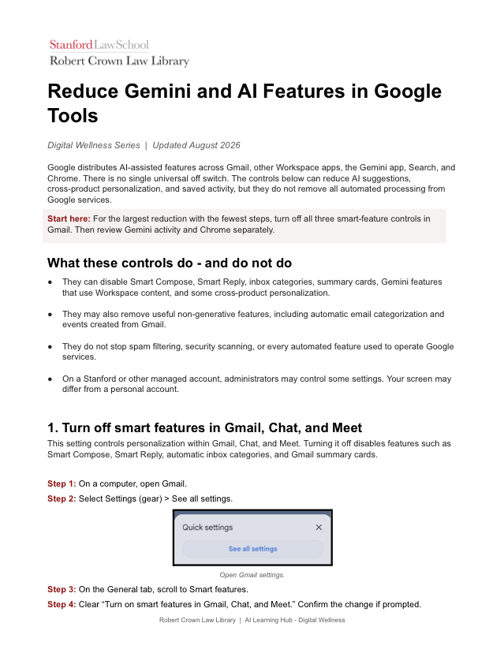

Reduce unwanted AI
Find and adjust AI features that add noise, use more context than you intend, or simply do not serve your work.
AI Learning Hub › Digital Wellness
Digital wellness is not about rejecting technology. It is about choosing when technology helps, when it distracts, and when human attention should lead.
Explore practical ways to reduce unwanted AI features, preserve meaningful human contribution, and build healthier habits around digital tools.
Find and adjust AI features that add noise, use more context than you intend, or simply do not serve your work.
Use AI selectively while preserving judgment, creativity, authorship, relationships, and consequential decisions.
Shape routines and environments that support focus, recovery, healthy boundaries, and time away from screens.

Step-by-step guidance for reviewing and limiting Gemini and other AI features across commonly used Google services.